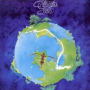

Tracking Force - 3

Fragile – Yes
Newly remastered from the analog tapes by Kevin Gray
Despite its popularity this isn’t even close to being my favorite Yes album. On any given day I might pull out Tales, or Close to the Edge, or Relayer or even Tormato for chrissakes, before I get to this one. Heard Roundabout too much as a teenager and the solo stuff interests me less than what the band does together, firing on all cylinders. Like, say, on Heart of the Sunrise, easily one of their greatest songs, summing up what was great about them from every angle; superb musicianship, great melodies, intriguing thematic development, and nonsensical lyrics. I recently realized I had a mid-70s UK pressing of this record and was enjoying the typical British attention to quality control when this thing dropped in my lap (actually I bought it at my local). Superior to the UK and American copies I have owned in almost every way, not the least of which is clean, quiet vinyl. The transients heard in Steve Howe’s plucking on Mood For a Day and Chris Squire’s trebly Rickenbacker everywhere are simply stunning. The bass is deep and tight and details you’ve probably never noticed pop out and say “cheerio”! Now, apparently Kevin Gray and Steve Hoffman did a mastering of this record about 10 years ago for AcousTech Mastering and I can’t tell if this is the same source, though I don’t see why he would be asked to do it again so soon. So I’m guessing this is the fruit of their labor, though the marketing blurb on the shrinkwrap only identified Kevin Gray of Cohearent Audio, and I’d like to give credit where it is due. And now I want to know what other Yes albums they/he did so I can grab them as soon as possible. Run, don’t walk, to get this one.
Belafonte at Carnegie Hall – Harry Belafonte
RCA Victor – Living Stereo
Do you like great music? Do you like great sounding music? Are you alive? If so, you owe it to yourself to find this record and play it to death. This is one of those audiophile no-brainers, released at the height of RCA’s legendary Living Stereo heyday, and because Belafonte was popular at the time it shouldn’t be too hard to locate a copy. If you have trouble finding a clean one, look for Acoustic Sounds recent reissue which, though it will set you back $55 as of this writing, is almost certainly well worth it (all hail Chad Kassem!). I happen to have a clean original copy and it’s a paragon of live recording, putting you “right there” on stage with Harry and his ensemble. Over the course of 4 sides, listen to the handsome devil charm the pants off an audience of New Yorkers, even whipping out a Hava Nageela for the locals. He follows that up with a devastating Danny Boy (is there any other kind?), as part of a tour “Round the World”. Elsewhere he delights with American and Caribbean folk songs, from John Henry to the obligatory Day O. I laughed, I cried, it was better than Cats.
14 May, 2016 - 01:48 — Alan Shulman